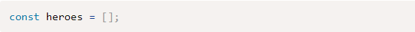
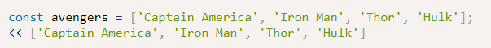
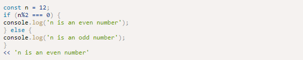
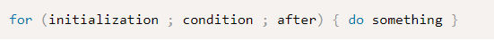
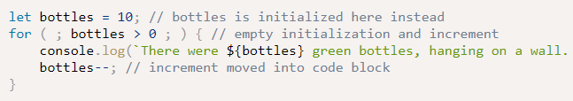
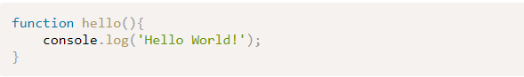

Readings
Programming basics
This chapter was very interesting, first a little history about the programming world, and the low-level programming languages and High-level programming languages.
Basically, the difference is the way that you use to communicate with a computer, the machine code or assembly language, is very primitive and complex if you want to say "hello world" in this way is a big line of zeros and ones. So, high-level languages simplify the way that you can communicate with the computer.
Arrays, Logic, and Loops
The array method is very interesting because you can save information in this matrix, In JavaScript, you can initialize an array in this way:
In this section, we’ll begin to look at logical conditions that allow you to control the flow of a program by running different blocks of code, depending on the results of certain operations.
If statement, is a condition that you can apply is X condition is true or false.
We can create an array literal using square brackets that already contain some initial values, so there’s no need to add each value one by one. Here's an example:
The else keyword can be used to add an alternative block of code to run if the condition is false. An if ... else statement looks like this:
Loops will repeat a piece of code over and over again according to certain conditions.
 Functions
Basically, a function in JavaScript is a way that you can organize and structure a program. is like the name means "function" like turn on the light or turn off. each function has steps that generate a result. in JavaScript, you can call this function in some cases and get a result.
This is an example of a function:
